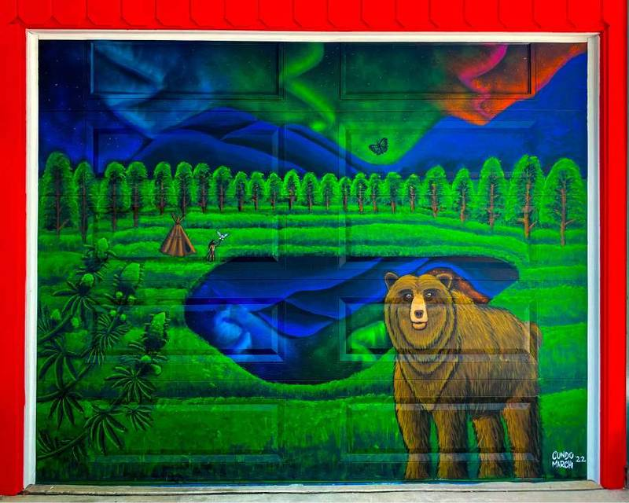
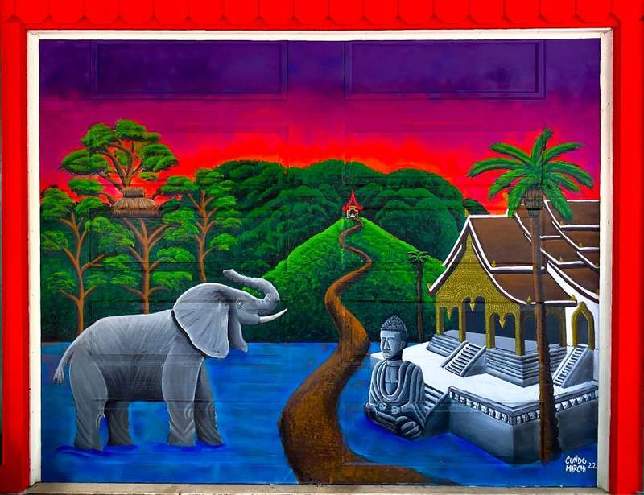
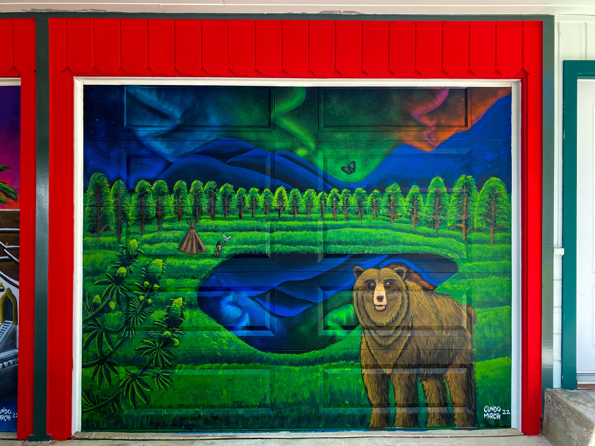
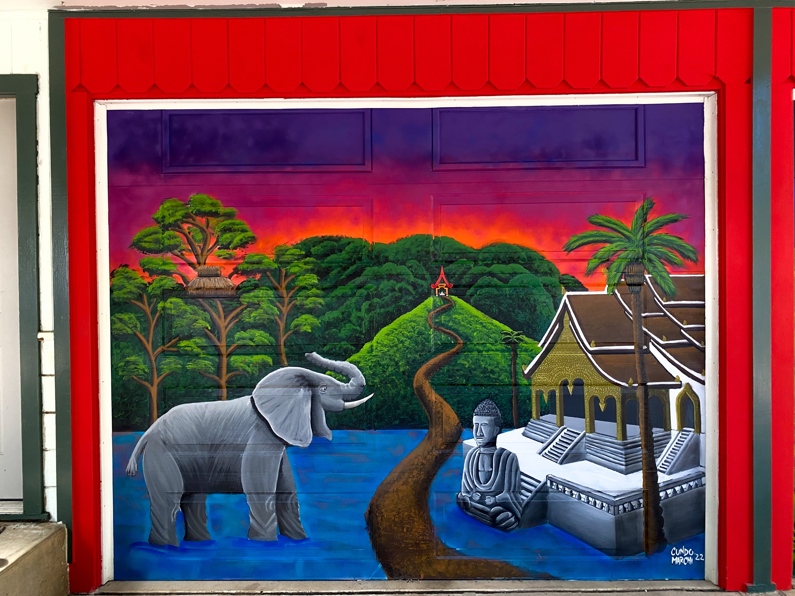

Laos & California
Commission WorkMix Media

Two garage doors, two worlds: Laos's nature and spirituality on the left, California's wild energy on the right.




Two garage doors, two worlds: Laos's nature and spirituality on the left, California's wild energy on the right.



